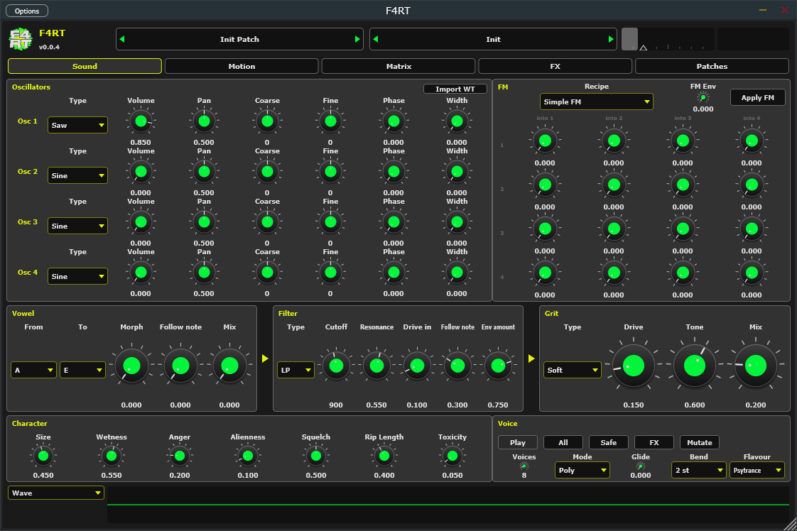
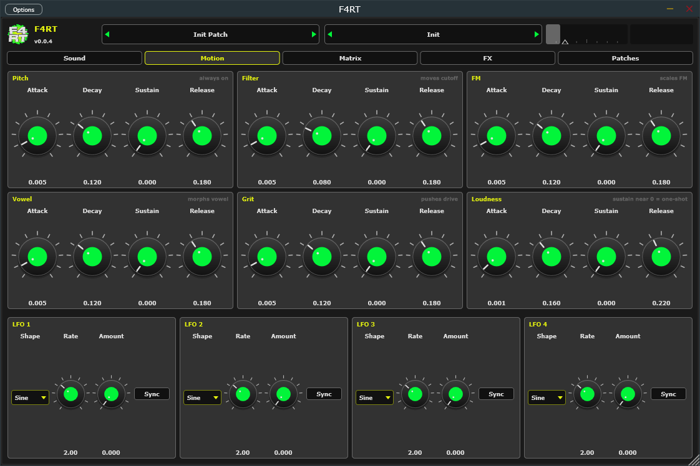
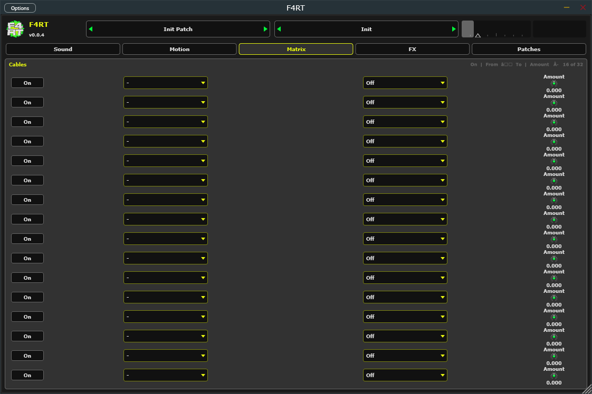
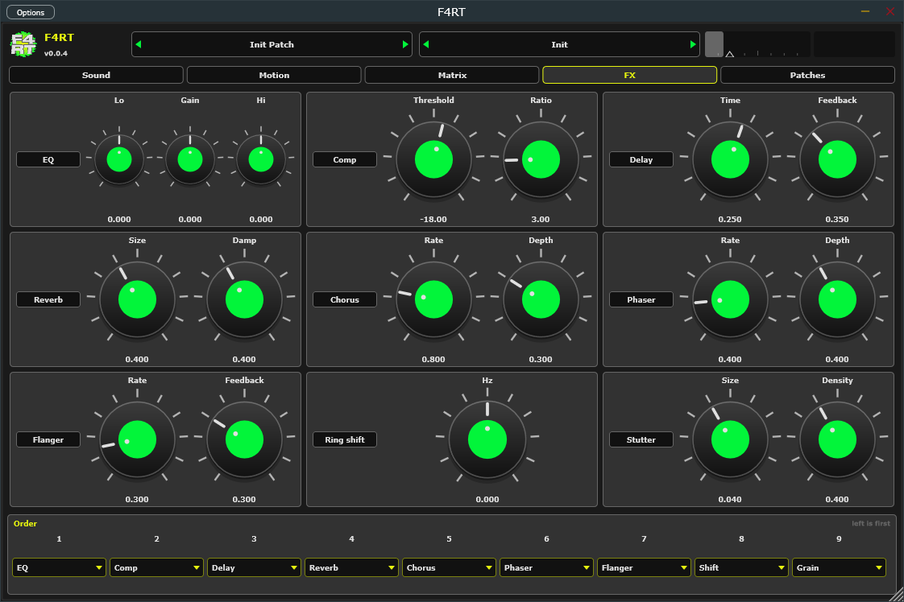
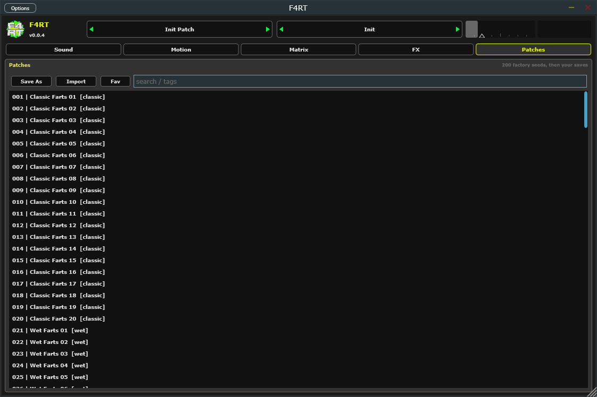
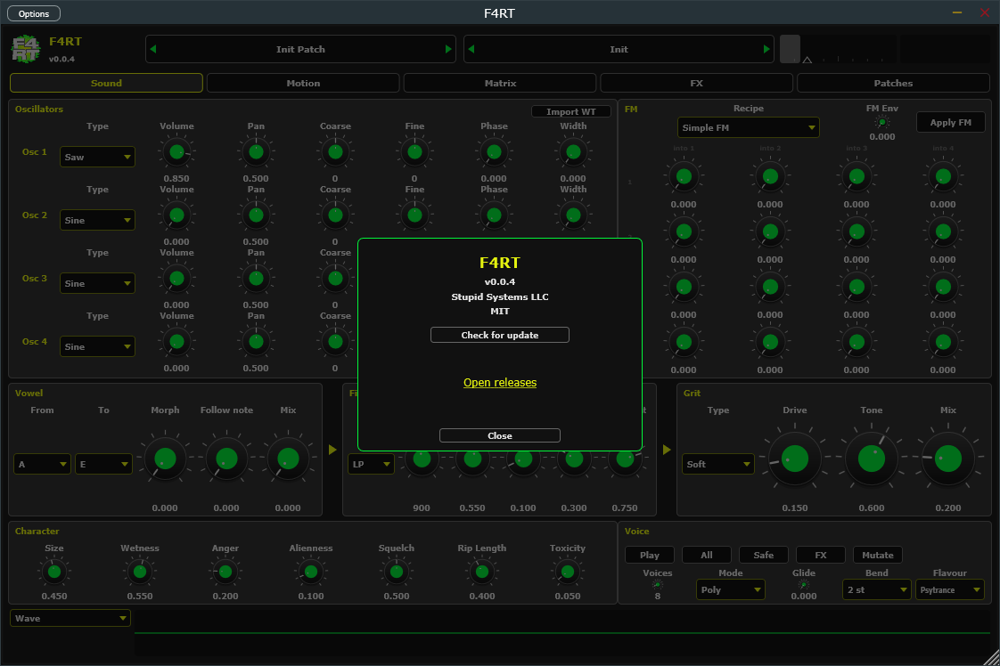

F4RT
PsyFart Designer. MIDI-triggered psytrance farts, squelches, croaks, zaps.
Four oscillators, FM, formants, macros, randomizer, 200 factory seeds, FX rack, MPE-friendly MIDI.
Sound
The Sound tab is the chain: Oscillators, FM, Vowel → Filter → Grit, Character, Voice, and a Wave scope. Play fires a C3 preview. Import WT sits on Oscillators. Recipe does nothing until you Apply FM. Flavour plus All / Safe / FX / Mutate sit on Voice. Motion, Matrix, FX, and Patches are the other tabs.





About
Click the logo, F4RT, or version in the top left. The dialog has Check for update (GitHub tags) and Open releases.
